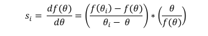

class: center, middle, inverse, title-slide .title[ # Smith & Matthews(2015):Quantifying Uncertainty and Variable Sensitivity Within the US Billion-Dollar Weather and Climate Disaster Cost Estimates ] .subtitle[ ## Online Presentation Assignment ] .author[ ### Jukun Zhang ] .institute[ ### Rutgers University ] .date[ ### 2025/04/10 (updated: 2025-04-11) ] --- #Summarize the main points and research questions - **Main point:** The main argument of this article is to improve the reliability and transparency of disaster loss estimates by quantifying and assessing the uncertainty in billion-dollar estimates of weather and climate disaster costs in the United States through the use of Monte Carlo simulations and sensitivity analysis. - **Research questions:** The article’s primary goal is to better quantify uncertainty in U.S. billion-dollar weather and climate disaster cost estimates and identify which variables most influence that uncertainty. ##**The authors pose the question:** - Given the data limitations and assumptions in estimating disaster losses, what is the range of possible total costs, and which inputs drive that range? --- #Explanation of analysis ##What did they do? - Smith and Matthews basically took a deep dive into figuring out how shaky the cost estimates are for huge U.S. weather disasters—like the 2012 drought, the 2011 tornado mess, and Hurricane Ike in 2008. They ran a bunch of simulations to slap some confidence ranges (like 95%, 90%, 75%) on those numbers and even zoomed in on Ike to see which parts of the data were throwing things off the most. - The authors construct deterministic estimates for each disaster by summing across states and loss categories: - **Total losses = ∑ state ∑ loss category (insured losses ij × multiplier ij ) + any other direct losses** - Where **i** is state, **j** is loss category **(residential, commercial, etc.)**, and the **“multiplier”** is **1/(insurance participation rate)**. They list these inputs (e.g., Tables 7, 9, and 11 in the paper list losses by state/category for each case). --- ##List of losses from three natural disasters. <div style="display: flex; justify-content: space-around; align-items: center; height: 60vh; gap: 20px; padding: 15px;"> <div style="flex: 1; max-width: 33%;"> <img src="picture/table%207.png" style="width: 100%; height: auto; object-fit: contain; border-radius: 8px; box-shadow: 0 4px 8px rgba(0,0,0,0.1);"/> </div> <div style="flex: 2; max-width: 33%;"> <img src="picture/table%209.png" style="width: 100%; height: auto; object-fit: contain;"/> </div> <div style="flex: 1; max-width: 33%;"> <img src="picture/table%2011.png" style="width: 100%; height: auto; object-fit: contain;"/> </div> </div> --- ##**How did they do it?** - They used this thing called **Monte Carlo simulations**—think of it like rolling dice 10,000 times on a computer. They tweaked stuff like insurance payouts and how many people actually have insurance by **±3% or ±5%**, playing around with whether the numbers spread out evenly or in a bell curve. For Ike, they poked each of the 76 inputs a tiny bit (1%) to see what shook the total cost the most. They pulled data from places like NOAA, FEMA, and the USDA, then adjusted it with some math to guess the full damage. ##**Why did they do it?** - They were tired of everyone just tossing out single cost numbers for disasters without saying how sketchy they might be. They wanted to give a range instead, so people—like government folks or us students researching—know what’s up with the data limits. Plus, they figured out stuff like Texas business losses being a big deal for Ike, so we can focus on fixing those gaps and make these billion-dollar disaster reports way more legit. --- #**Appropriateness and novelty of analysis** - The analysis from the article feels pretty solid and kinda fresh for what they’re tackling. They’re trying to figure out how messy disaster cost numbers can get, which is super important when you think about how much cash we’re talking. - They didn’t just give one number for how much damage happened; they showed a range of possible costs to highlight how uncertain the estimates can be. This makes sense because disasters are chaotic, and the data—like how many people have insurance—can be patchy. - They also dug into Hurricane Ike to figure out which pieces of information make the biggest difference in the final cost, which is a fresh twist. For people who care about these numbers (like government officials or researchers), this approach is helpful and different—it’s less about guessing one answer and more about showing the full picture of what might be true. --- ##**Monte Carlo simulations method:** - **Monte Carlo simulations** quantify uncertainty To move from a single estimate to a range, Smith and Matthews performed **Monte Carlo simulations** for each case study. The idea is **to treat each input in the sum (the insurance loss value and key parameters such as participation rates or multipliers) as an uncertain variable** rather than a fixed value. Then, they **repeatedly sampled** these inputs and recalculated the total losses to see how much they changed. The specific details of the Monte Carlo implementation are as follows: - They took each data input value (such as PCS reported insurance losses for homes in Texas, or NFIP claims in Louisiana, etc.) and allowed it to vary by a small random percentage. In the basic simulation, they chose a **±3% uncertainty** for each input, meaning that in any simulation run, the input could be a few percentage points higher or lower than the best estimate. They also tested larger **±5%** variations to see how slightly larger input errors propagate. These percentage choice was not arbitrary - they point out that it was based on insurance data audits that showed that **PCS insurance loss estimates were typically within 5% of the final settlement value**. In other words, the industry data they used is fairly reliable, so a 3% margin of error is probably adequate for most insurance loss numbers. --- - They ran a large number of simulations for each scenario **(the paper mentions 10,000 simulations for the histograms)**. In each simulation, all inputs were perturbed by random sampling at the same time. The authors tried **two different assumptions** about the distribution of the input errors: - **Normal distribution:** The input values are spread out in a bell-curve fashion around the original value (most simulations produce results close to the original value, but occasionally there are values that stray far away). They note that under the normality assumption, some runs can produce deviations above +3% (unless truncated) in the upper tail. - **Uniform distribution:** The input values are uniformly distributed within the ±3% range (no outliers outside the set range). - They label these as four cases **(Case 1: ±3% normal; Case 2: ±3% uniform; Case 3: ±5% normal; Case 4: ±5% uniform)** and run all of them for each event. This approach thoroughly tests the sensitivity of output uncertainty to assumptions about input uncertainty. - For each event, the output of the Monte Carlo is a distribution of total loss estimates. From these, they extract **95%, 90%, and 75% confidence intervals**—effectively, ranges of simulated outcomes that cover those percentages. - For example, **the 95% interval** might be from $X to $Y billion, indicating that they are **95%** confident that the true total cost lies within that range, given the assumed input uncertainties. They also report the mean and median of the simulated losses. --- ##**Sensitivity Analysis method** - After quantifying the overall uncertainty, Smith and Matthews delved deeper into which inputs contributed most to the uncertainty. They performed a **sensitivity analysis** on the case of Hurricane Ike (chosen as representative of large events with multiple components): - Starting with the mean of all inputs **(their best estimate set θ)**, they increased one input at a time by a small amount (+1%) and recalculated the total losses. - They normalized the sensitivity to account for the scale of the inputs and outputs. In formula form, they report the **sensitivity index:** <div style="display: flex; justify-content: center; height: 20vh;"> <div style="max-width: 90%;">  </div> </div> --- - In simple terms, they measure the percentage change in total losses resulting from a percentage change in each input, creating a comparable metric across different units/magnitudes. This provides a fair comparison of the impact of relative changes in each parameter on the outcome. There are **76 input parameters** in the Hurricane Ike cost model. They calculated the sensitivity of all parameters and then ranked them. - The results clearly show in Figure 8 that **a few inputs dominate:** Texas PCS commercial insurance losses and their corresponding multiplier (insurance participation rate) are far and away the most sensitive. In other words, a small change (or error) in the Texas business damage numbers will change the total losses more significantly than a small change in any other input. This is not surprising, as business losses in Texas were a significant component of Ike's damages (Ike hit the Houston area hard). They also note that offshore energy losses are also sensitive factors - Hurricane Ike damaged offshore oil and gas infrastructure, and the uncertainty in these estimates also significantly affects the total when perturbed. - In contrast, some inputs have very low sensitivity - for example, a 1% adjustment in losses in a small state or a well-insured category might barely move the total. By performing this analysis, they identified a **priority list** indicating which variables' uncertainty reductions would most effectively narrow the confidence interval for the total costs. --- ###**Fig.8 Normalized sensitivity analysis of damage totals caused by Hurricane Ike by state and loss data category. ** <div style="display: flex; justify-content: center; height: 20vh;"> <div style="max-width: 90%;"> <img src="picture/fig%208.png" style="width: 100%; height: auto;"/> </div> </div> --- #Comment on Analysis methods: - From what I’ve come across in basic reports or articles about disaster costs—like news saying a hurricane cost $30 billion, cost given by table 1—Smith and Matthews’ approach stands out as really strong, but let’s weigh it against other options. They took real data from places like NOAA (weather experts) and FEMA (disaster aid) about the 2012 drought, 2011 tornado outbreak, and Hurricane Ike, then ran thousands of tests to show a range of possible costs, not just one number. This makes sense because disaster data—like how many people have insurance—can be fuzzy. They used a method where they tweaked numbers slightly **(like 3% or 5%)** to see how costs shifted, which feels practical since they’re working with solid records, not wild guesses. <div style="display: flex; justify-content: center; height: 80vh;"> <div style="max-width: 60%;"> <img src="picture/table%201.png" style="width: 100%; height: auto;"/> </div> </div> --- - Could there be better way? Some folks might use a method called Bayesian analysis, which mixes past knowledge with new data to guess costs—it’s like updating your hunch as you learn more. That could work for disasters, but it needs a lot of starting assumptions, and their data **(like insurance payouts in Table 11)** isn’t perfect for that—it’s too spotty. Another option is something called regression, where you find patterns in past disasters to predict costs, but that’s more for guessing future events, not checking old ones like they did. Their method, running tons of “what-if” scenarios, fits because it uses what they had—**real numbers from Tables 7, 9, 11**—and shows how reliable those are **(like, Ike’s $30 billion fits the middle of Table 12)**. It’s not the flashiest, but it’s the best for their goal: **making sense of past costs without overcomplicating things**. Other methods might drown in guesswork or need data they didn’t have. <div style="display: flex; justify-content: center; height: 80vh;"> <div style="max-width: 60%;"> <img src="picture/table%2012.png" style="width: 100%; height: auto;"/> </div> </div> --- #Novel method - They did something pretty new to me—the way they used **Monte Carlo simulations** caught my eye. I haven’t seen that in disaster cost stuff before, like in news or basic reports. What? Instead of just saying “this disaster cost $30 billion,” they ran a bunch of tests to give a range, like “it’s probably $27 billion to $33 billion.” - **Why?** Because disaster costs are tricky—things like insurance data (Table 6) aren’t exact, so they wanted to show all the possibilities. - **How?** They took their numbers, tweaked them a bit (like guessing more or less people had insurance), and ran thousands of tries on a computer to see how the costs shook out. It’s like rolling dice over and over to get a feel for the odds, and it’s cool because it makes the numbers more honest and useful. <div style="display: flex; justify-content: center; height: 80vh;"> <div style="max-width: 60%;"> <img src="picture/table%206.png" style="width: 100%; height: auto;"/> </div> </div> --- #Presentation of result I: - The author clearly shows the simulated distribution, confidence interval and relationship with NOAA's original estimate for each disaster through tables and graphs. The conclusion is concise and clear: - **The original estimate** is at the center of the simulation; - The simulation results are credible; - Using **±5%** error and uniform distribution can be used as the most conservative (most reliable) model; - **The sensitivity analysis** graph of Hurricane Ike shows the asymmetric impact of key parameters on the results; - Drought events have the greatest uncertainty because agricultural loss estimates are inherently vague; - The author points out that if the quality of insurance participation data can be improved in the future, the confidence interval of the model will be further reduced. --- #Presentation of result II: <div style="display: flex; justify-content: space-around; align-items: center; height: 80vh; gap: 20px; padding: 15px;"> <div style="flex: 1; max-width: 50%;"> <img src="picture/fig%201ab.png" style="width: 100%; height: auto; object-fit: contain; border-radius: 8px; box-shadow: 0 4px 8px rgba(0,0,0,0.1);"/> </div> <div style="flex: 2; max-width: 50%;"> <img src="picture/fig%202ab.png" style="width: 100%; height: auto; object-fit: contain;"/> </div> </div> --- #Presentation of result III: <div style="display: flex; justify-content: center; height: 5vh;"> <div style="max-width: 100%;"> <img src="picture/fig%203.png" style="width: 100%; height: auto;"/> </div> </div> --- #Comment on this article ###**Good:** - The data from FEMA, NFIP, USDA, and PCS are properly integrated, and the insurance participation rate is used as the core of the modeling, which is of practical significance; Rigorous and innovative methods. For the first time, confidence interval analysis is added to the disaster loss estimation, which improves the credibility of the loss assessment. Sensitivity analysis clearly tells data users where to improve data collection; charts are used properly and the interpretation is clear; And the conclusion is practical: It can be used as a model paradigm for improving NOAA's subsequent annual disaster reports; --- ###**Bad:** - The model assumes that all parameter disturbances are independent of each other, and there may be systematic biases in reality (e.g., all insurance data in a disaster tend to be low); **±3% or ±5% errors** may be conservative, especially for agricultural or indirect losses (e.g., damage to public infrastructure); - **Sensitivity analysis** is limited to **one case** (Hurricane Ike), and it would be better if it could be extended to other types of disasters; only direct economic losses were assessed, and loss of life, natural environmental damage, etc. were not covered; long-term insurance participation data may need to be updated, and most of the surveys used by the author are relatively old. --- #Thanks for reading! #Looking forward to your comments!